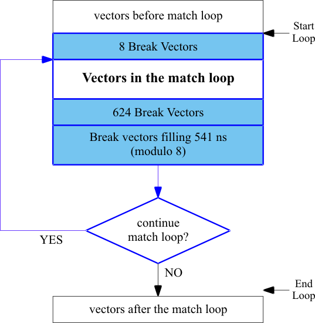

Timed match loop
The WTER (WaiT on ERror) and MBGN (Match BeGiN) instructions start a match loop. Vectors are executed in a continuous loop, until the DUT outputs match the expected data. The WTER, MJPE (Match JumP on Error) and MEND (Match END) instructions complete the match loop.
During a match loop break vectors are inserted as shown below.

The break vectors are generated automatically. Note that the error map does not record data during a match loop. If your DUT outputs do not match the required condition, you can break the sequence by using the BRK parameter of the SQST command, see SQST, SQST? - (SeQuencer STate). In this case, the last loop in your sequence is recorded on the error map.
If a match is not found within 900 seconds (default value), a SmarTest Work Center is called and the sequencer enters the break state. You can set the SmarTest Work Center period yourself using the SQTO (SeQuencer TimeOut) command. Note that in a multi-site setting, SmarTest cannot determine on which site the SmarTest Work Center occurred. It will declare all sites as failed.
Example
The following listing illustrates a timed match loop:
SQPG 11,WTER,,,,(@) SQPG 12,MBGN,,,,(@) SQPG 13,GENV,2,,,(@) SQPG 14,WTER,,,,(@) SQPG 15,MJPE,,,,(@) SQPG 16,MEND,,,,(@)
Functional changes
- Introduced before SmarTest 6.3.2